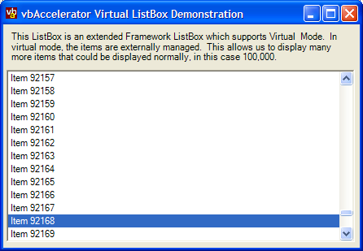

VListBox (46K)
VListBox (46K)
 1 Nov 2003
1 Nov 2003
First Posted

Virtual ListBox
Support unlimited numbers of items in a ListBox by using the API to implement a virtual control.
Virtual List Boxes can be used if you ever need to try and show a list containing a vast quantity of data. Instead of adding physical objects to the ListBox, instead you tell it how many rows there should be, and it simply defers all drawing of items to the owner of the box using owner draw item methods.
The Windows Forms Framework doesn't support Virtual List Boxes directly, so this article demonstrates a derived version of the existing ListBox component which performs the task (VB.NET and C# versions provided).
About Virtual List Boxes
The .NET Framework List Box is just a thin wrapper around the Windows API ListBox control. Whilst it supports many more features of the underlying ListBox than the VB Classic version did (such as multiple columns and owner draw mode) it still doesn't support all of the features. One of these is the LBS_NODATA style. As the name suggests, when a ListBox has the LBS_NODATA style, the control no longer stores any data for items, instead you simply tell it how many items should be displayed and it calls back whenever an item needs to be displayed using the DrawItem method. Of course, that means that the data must be held externally, and in a way that can be accessed based on the row number of the item to be displayed. Given that long lists are often stored in a database, this is often a reasonable thing to do.
Creating a Virtual List Box
The .NET Framework provides a very powerful override for all controls which was never available in VB Classic - the ability to modify the styles that are used when the control is created. Whenever a control is about to be created, the CreateParams property is called to define the styles, visibility, class name and positioning of the new control. This property allows you to make modifications to the style of any .NET Framework control regardless of whether these styles were originally envisaged by the designer. However,despite the power not everything is possible, as some changes might conflict with the original control designer's assumptions when it comes to calling methods in the control, as we'll see shortly.
To modify a ListBox as it is created so it has the Virtual List Box style, you override the CreateParams method as follows:
/*
* Listbox Styles
*/
private const int LBS_NOTIFY = 0x0001;
private const int LBS_SORT = 0x0002;
private const int LBS_NOREDRAW = 0x0004;
private const int LBS_MULTIPLESEL = 0x0008;
private const int LBS_OWNERDRAWFIXED = 0x0010;
private const int LBS_OWNERDRAWVARIABLE = 0x0020;
private const int LBS_HASSTRINGS = 0x0040;
private const int LBS_USETABSTOPS = 0x0080;
private const int LBS_NOINTEGRALHEIGHT = 0x0100;
private const int LBS_MULTICOLUMN = 0x0200;
private const int LBS_WANTKEYBOARDINPUT = 0x0400;
private const int LBS_EXTENDEDSEL = 0x0800;
private const int LBS_DISABLENOSCROLL = 0x1000;
private const int LBS_NODATA = 0x2000;
/// <summary>
/// Sets up the <see cref="CreateParams" /> object to tell
/// Windows how the ListBox control should be created. In
/// this instance the default configuration is modified to
/// remove <c>LBS_HASSTRINGS</c> and <c>LBS_SORT</c>
/// styles and to add <c>LBS_NODATA</c>and LBS_OWNERDRAWFIXED
/// styles. This converts the ListBox into a Virtual ListBox.
/// </summary>
protected override System.Windows.Forms.CreateParams CreateParams
{
get
{
CreateParams defParams = base.CreateParams;
defParams.Style = defParams.Style & ~LBS_HASSTRINGS;
defParams.Style = defParams.Style & ~LBS_SORT;
defParams.Style = defParams.Style |
LBS_OWNERDRAWFIXED | LBS_NODATA;
return defParams;
}
}
The first thing to do was to call the base (MyBase in VB) implementation of CreateParams to get the default setup. Then the styles passed to Windows are modified to remove the LBS_HASSTRINGS and LBS_SORT properties, neither of which make sense in a virtual list box, and add the LBS_NODATA style. To make sure things work correctly, the mandatory LBS_OWNERDRAWFIXED style is also set. This is equivalent to setting the DrawMode to OwnerDrawFixed.
Having done this, we have a virtual ListBox. To use it, a new methods to get and set the number of rows in the control is needed before it can be used. This can be done using the LB_GETCOUNT and LB_SETCOUNT messages:
private const int LB_GETCOUNT = 0x018B;
private const int LB_SETCOUNT = 0x01A7;
[DllImport("user32", CharSet = CharSet.Auto)]
private extern static int SendMessage(
IntPtr hWnd, int msg, int wParam, IntPtr lParam);
/// <summary>
/// Gets or sets the number of virtual items in the ListBox.
/// </summary>
public int Count
{
get
{
return SendMessage(this.Handle,
LB_GETCOUNT, 0, IntPtr.Zero);
}
set
{
SendMessage(this.Handle,
LB_SETCOUNT, value, IntPtr.Zero);
}
}
Now you can run the control and test it with some rows. There is a problem, though. The author of the ListBox control has had to include some code which keeps the SelectedObjectCollection up to date with the items that are actually selected in the control. Unfortunately the VListBox doesn't contain any objects, so this collection cannot be set up, and whenever you try to access information about the selected items, or the control is terminated it throws an exception.
The implementation of the method that throws the exception is private, and therefore it is difficult to change. Luckily in this case we fix the problem by firstly providing new methods to get and set the selection and with a little hack (a try .. catch block) around the standard method in the OnHandleDestroyed method.
So on to fixing the rest of the functions in the ListBox. Firstly, we need to be able to "hide" the methods that you cannot use in a Virtual List Box, or at least, prevent them from being inadvartently used. To hide a method, a new (Shadows in VB) implementation is provided which throws an Exception. They are also marked with BrowsableAttribute(false) to stop them from appearing in the VS.NET property browser. These methods are hidden that way:
- DrawMode
The drawing style of a virtual list box must always be set to OwnerDrawFixed.
- Items
In a Virtual ListBox, there is no collection of data, as the box only holds a sequence of rows and calls the owner back using the DrawItem event (or you can override the OnDrawItem override).
- SelectedObjectCollection
Although it is possible to get selected items in a Virtual ListBox, they cannot be determined using this collection since there are no objects associated with the ListBox.
- Sorted
In a Virtual List, the sorted property has no meaning since there is no data to sort. Any sorting has to be performed on the external data that is shown in the control.
An example of this kind of hiding is shown below:
/// <summary>
/// Throws an exception. All the items for a Virtual ListBox
/// are externally managed.
/// </summary>
/// <remarks>The selected index can be obtained using
/// the <see cref="SelectedIndex"/> and
/// <see cref="SelectedIndices"/> properties.
/// </remarks>
[BrowsableAttribute(false)]
public new SelectedObjectCollection SelectedItems
{
get
{
throw new InvalidOperationException(
"A Virtual ListBox does not have a " +
"SelectedObject collection");
}
}
Next, new methods are needed for selection processing. The design here has three parts:
- Providing a new SelectedIndex property, to prevent the exception associated with the object collection.
- Adding some simple methods for getting and setting the selection of a single item.
- Provide a new SelectedIndexCollection implementation.
Getting and setting a selection in a ListBox using the API is accomplished in one of two ways. In a single selection ListBox, the LB_GETCURSEL and LB_SETCURSEL messages are used. In a multi-select ListBox, the LB_GETSELITEMS and LB_SETSEL messages are used. The LB_GETSELITEMS differs from most messages in that it takes parameters for the maximum number of items to retrieve and an array to fill with the indexes of the selected items. The code presented here uses the Marshal to allocate a memory buffer for the array and read data from it:
/// <summary>
/// Gets/sets the selected index in the control. If the
/// control has the multi-select style, then the first
/// selected item is returned.
/// </summary>
public new int SelectedIndex
{
get
{
int selIndex = -1;
if (SelectionMode == SelectionMode.One)
{
selIndex = SendMessage(this.Handle,
LB_GETCURSEL, 0, IntPtr.Zero);
}
else if ((SelectionMode == SelectionMode.MultiExtended) ||
(SelectionMode == SelectionMode.MultiSimple))
{
int selCount = SendMessage(this.Handle,
LB_GETSELCOUNT, 0, IntPtr.Zero);
if (selCount > 0)
{
IntPtr buf = Marshal.AllocCoTaskMem(4);
SendMessage(this.Handle, LB_GETSELITEMS, 1, buf);
selIndex = Marshal.ReadInt32(buf);
Marshal.FreeCoTaskMem(buf);
}
}
return selIndex;
}
set
{
if (SelectionMode == SelectionMode.One)
{
SendMessage(this.Handle,
LB_SETCURSEL, value, IntPtr.Zero);
}
else if ((SelectionMode == SelectionMode.MultiExtended) ||
(SelectionMode == SelectionMode.MultiSimple))
{
// clear any existing selection:
SendMessage(this.Handle, LB_SETSEL, 0, new IntPtr(-1));
// set the requested selection
SendMessage(this.Handle, LB_SETSEL, 1, (IntPtr) value);
}
}
}
The other selection methods use the same messages and techniques. Refer to the full download for details of the implementation.
Using the VListBox
The VListBox in this sample is provided as code only without a compiled control (although it is easy to create one: just add the VListBox class to a new Class Library project, set your AssemblyInfo details and compile it). To use non-compiled controls in a project, you add the main class and then double click on it. Sometimes VS.NET gets the idea and adds the item to the Toolbox. If it doesn't, then use the following hack:
Using a code only control on a form in VS.NET
- Add a standard ListBox control to the form, and save the form.
- Open up the "Windows Form Designer generated code" region of the code, and find the member variable declaration and new instantiation of the control. Change the class name from the standard control to the new one (in this case System.Windows.Forms.ListBox to vbAccelerator.Components.Controls.VListBox).
- Have a look at the code associated with the control in the InitializeComponent routine. Ignore the warnings about not modifying the code in the editor and delete any property settings which are inappropriate.
- Save and run.
Once you have an instance of the control, you need to do two things; set the number of rows and install a DrawItem handler to render the items in the control. The demonstration has code like this:
// Set the number of items in our Virtual List Box:
listBox1.Count = 100000;
// Set the draw handler for items in the List Box:
listBox1.DrawItem += new DrawItemEventHandler(listBox1_DrawItem);
...
private void listBox1_DrawItem(object sender, DrawItemEventArgs e)
{
// Determine the text for the item we want to display:
text = String.Format("Item {0}", e.Index);
// Draw the item. You can use your own customised drawing
// routine for more interesting ListBoxes, e.g. with icons,
// pictures, multi-columns etc.
listBox1.DefaultDrawItem(e, text);
}
Of course, in a real application you would want the ListBox to display data from a real source so whenever DrawItem fires you would need to call into your data source to get the information for the item with that index.
Using Caching to Boost Performance
DrawItem fires every time the item on screen needs to be redisplayed, regardless of whether the data has been retrieved before or not. It also fires for each row in turn. Both of these can lead to multiple queries to the same data and degraded performation. It therefore makes sense to provide a cache of recently used items, which can also be pre-initialised with blocks of data.
The demonstration code provides a very simple realisation of this concept by using a class, FixedSizeCache, to store recently displayed items. FixedSizeCache is basically a Hashtable which enables it to store objects against a key and is ruthlessly efficient at finding items based on their key. To prevent the cache from becoming excessively large, every item that is added to the cache is added to a Queue. A queue is a circular array which allows items to be removed in the order they were added, so once the cache reaches a particular size, the first item is dequeued and then removed from the cache.
Conclusion
This article provides a .NET Framework Virtual ListBox which can be used to display an indefinitely large number of items without consuming large amounts of memory. You can use this sort of control whenever you have a data store that can be queried by index in some way.